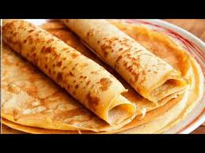

Panqueques

Descripcion
Los panqueques son la base perfecta para hacer tanto postres dulces
como platos salados. Si quieres aprender como hacerlos sigue viendo
y pronto los podras disfrutar como mas te gusten.
Ingredientes
- 500 ml de leche
- 250 gr de harina
- 1 pizca de sal
- 2 huevos
Pasos:
- En un recipiente mezclar los ingredientes hasta obtener una mezcla heterogenea y sin grumos.
- Calentar una sarten al minimo con materia grasa.
- Echar un cucharon de la mezcla y cuando coagule voltearlo.
- Servir como mas te guste!